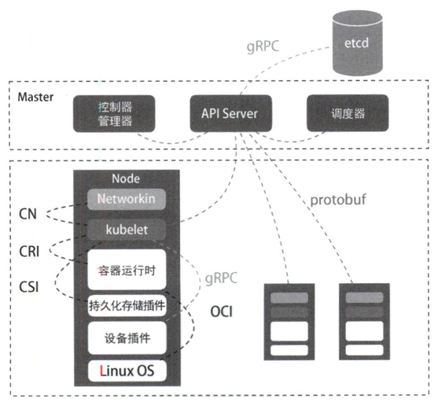
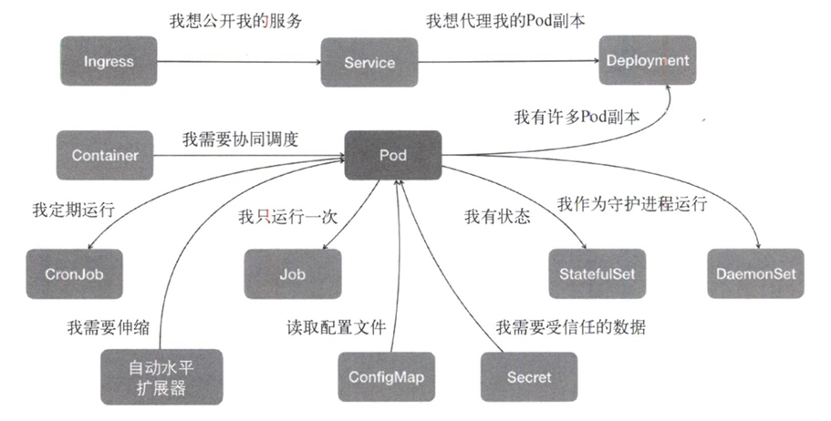

1 背景回顾：云原生大事记
介绍了容器技术和PAAS的历史背景，讲的很通俗易懂，建议阅读原文第一章。
2 容器技术基础
由于docker版本更新以及阅读时本地环境和书中环境存在差异，许多示例无法正常运行，有待后续补充。
内容中提及的概念可从docker manual获取详尽可靠的解释。
2.1 从进程开始说起
2.2 隔离与限制
2.3 深入理解容器镜像
2.4 重新认识 Linux 容器
2.1 从进程开始说起
容器本身的价值非常有限，真正有价值的是“容器编排”。
一个程序运行起来之后的计算机执行环境的总和就是进程。
容器是怎么一回事儿？
容器技术的核心功能，就是通过约束和修改进程的动态表现，为其创造一个“边界”。对于Docker等大多数Linux容器来说，Cgroups技术是用来制造约束的主要手段，而Namespace技术是用来修改进程视图的主要方法。
理解Cgroups和Namespace
首先创建一个容器
masha@MaSha_PC:~$ docker run -it busybox /bin/sh
Unable to find image 'busybox:latest' locally
latest: Pulling from library/busybox
7b2699543f22: Pull complete
Digest: sha256:c3839dd800b9eb7603340509769c43e146a74c63dca3045a8e7dc8ee07e53966
Status: Downloaded newer image for busybox:latest
/ #
-it参数告诉了Docker项目在启动容器后，需要给我们分配一个文本输入/输出环境，即TTY，跟容器的标准输入相关联，这样我们就可以和这个Docker容器进行交互了。而/bin/sh就是我们要在Docker容器里运行的程序。
如此一来，我们的Linux机器就变成了宿主机，而一个运行着/bin/sh的容器就在这个宿主机里运行了。
/ # ps
PID USER TIME COMMAND
1 root 0:00 /bin/sh
7 root 0:00 ps
在容器里面执行ps可以看到在Docker里最开始执行的/bin/sh就是1号进程，另一个进程是我们刚刚执行的ps，这意味着/bin/sh和ps已经被Docker隔离在了一个跟宿主机完全不同的空间中了(看不到宿主机的进程)。
怎么做到隔离的？
这就是Namespace的作用。Namesapce其实只是Linux创建新进程的一个可选参数。在Linux系统中创建线程的系统调用是clone()，比如
int pid = clone(main_function, stack_size, SIGCHLD, NULL);
这回为我们创建一个新的进程并返回他的PID。而当我们用clone()系统调用创建一个新进程时，就可以在参数中指定CLONE_NEWPID参数，比如：
int pid = clone(main_function, stack_size, CLONE_NEWPID | SIGCHLD, NULL);
这时，新创建的进程会被隔离在一个全新的进程空间。在这个进程空间里，它的PID是1，但在宿主机真实的进程空间里，这个进程的PID还是它真是的数值(并非1)。
如果多次执行上面的clone调用，就会创造出多个PID Namespace，每个Namespace都访问不了真实进程空间，也访问不了其他PID Namespace的进程空间。
除了PID Namespace，Linux操作系统还提供了Mount、UTS、IPC、Network和User这些Namespace。比如，Mount Namesapce用于让被隔离进程只能访问到当前Namesapce的挂载点信息，NetWork Namespace用于让被隔离的进程只能访问当前Namespace里的网络设备和配置。
关于Namespace：
-
Linux manual 的说明
A namespace wraps a global system resource in an abstraction that makes it appear to the processes within the namespace that they have their own isolated instance of the global resource. Changes to the global resource are visible to other processes that are members of the namespace, but are invisible to other processes. One use of namespaces is to implement containers.
这就是Linux容器最基本的实现原理。可见，容器其实是一种特殊的进程。
2.2 隔离与限制
关于隔离
Linux容器使用Namespace技术来实现“隔离”。用户在容器里运行的应用进程跟宿主机的其他进程一样都由宿主机操作系统统一管理，只不过这些被隔离的进程拥有额外设置的Namespace参数。Docker不对这些进程负责，更多的是旁路式的辅助和管理。
Docker不需要像Hypervisor那样创建虚拟机并运行一个完整的操作系统来执行用户的应用进程，避免了额外的资源消耗和占用。容器化后的用户进程依然是宿主机上的普通进程，不存在因为虚拟化而产生的性能损耗；使用Namespace作为隔离手段的容器也不需要单独的操作系统，因此容器额外的资源占用几乎可以忽略不计。
存在的问题：隔离不彻底。
-
多个容器之间使用的还是同一个宿主机的操作系统内核。
-
Linux内核中很多资源不能被Namespace化，最典型的例子就是时间。
这意味着如果容器中使用
settimeodday系统调用修改了时间，那么整个宿主机的时间都会随之修改。 -
由于共享宿主机的内核，容器向应用暴露的攻击面相当大，应用“越狱”的难度比虚拟机低得多。
实践中可以使用
Seccomp技术对容器内部发起的所有系统调用进行过滤和甄别来进行安全加固。但这种方法因为多了一层对系统调用的过滤，会拖累容器的性能。
所以在生产环境中，不会把物理机上的Linux容器直接暴露到公网上。基于虚拟化或者独立内核技术的容器实现可以比较好地在隔离与性能之间达到平衡。
关于限制
由于用Namespace技术创建出来的“容器”和其他宿主机上的进程是平等的竞争关系，因此它需要的资源可能会被宿主机上的其他进程用光，它自己也可能用光宿主机的所有资源。
Linux Cgroups(Linux control groups)就是Linux内核中用来为进程设置资源限制的一个重要功能。它最主要的作用就是限制一个进程组能够使用的资源上限，包括CPU、内存、磁盘、网络带宽等等。
此外，Cgroups还能够对进程进行优先级设置、审计，以及将进程挂起和恢复等操作。
在Linux中，Cgroups向用户暴露出来的操作系统接口是文件系统，即它以文件和目录的方式组织在操作系统的/sys/fs/cgroup路径下。在Ubuntu 16.04(CentOS 8也可以)的机器里，可以用mount指令将其显示：
[masha@dev kubernetes-analyse]$ mount -t cgroup
cgroup on /sys/fs/cgroup/systemd type cgroup (rw,nosuid,nodev,noexec,relatime,xattr,release_agent=/usr/lib/systemd/systemd-cgroups-agent,name=systemd)
cgroup on /sys/fs/cgroup/hugetlb type cgroup (rw,nosuid,nodev,noexec,relatime,hugetlb)
cgroup on /sys/fs/cgroup/rdma type cgroup (rw,nosuid,nodev,noexec,relatime,rdma)
cgroup on /sys/fs/cgroup/cpu,cpuacct type cgroup (rw,nosuid,nodev,noexec,relatime,cpu,cpuacct)
cgroup on /sys/fs/cgroup/blkio type cgroup (rw,nosuid,nodev,noexec,relatime,blkio)
cgroup on /sys/fs/cgroup/devices type cgroup (rw,nosuid,nodev,noexec,relatime,devices)
cgroup on /sys/fs/cgroup/pids type cgroup (rw,nosuid,nodev,noexec,relatime,pids)
cgroup on /sys/fs/cgroup/net_cls,net_prio type cgroup (rw,nosuid,nodev,noexec,relatime,net_cls,net_prio)
cgroup on /sys/fs/cgroup/memory type cgroup (rw,nosuid,nodev,noexec,relatime,memory)
cgroup on /sys/fs/cgroup/freezer type cgroup (rw,nosuid,nodev,noexec,relatime,freezer)
cgroup on /sys/fs/cgroup/perf_event type cgroup (rw,nosuid,nodev,noexec,relatime,perf_event)
cgroup on /sys/fs/cgroup/cpuset type cgroup (rw,nosuid,nodev,noexec,relatime,cpuset)
这里输出的是一系列的文件系统目录，如果没有则需要自行挂载Cgroups。可以看到在/sys/fs/cgroup下面有很多诸如cpuset、cpu、memory这样的子目录，也叫子系统。这些都是宿主机当前可以被Cgroups限制的资源种类。而在子系统对应的资源种类下，可以看到这类资源具体可以被限制的方法。比如CPU子系统下可以看到这几个配置文件：
[masha@dev kubernetes-analyse]$ ls -l /sys/fs/cgroup/cpu
lrwxrwxrwx 1 root root 11 Apr 20 22:38 /sys/fs/cgroup/cpu -> cpu,cpuacct
[masha@dev kubernetes-analyse]$ ls -l /sys/fs/cgroup/cpu/
total 0
-rw-r--r-- 1 root root 0 Apr 21 12:10 cgroup.clone_children
-rw-r--r-- 1 root root 0 Apr 20 22:38 cgroup.procs
-r--r--r-- 1 root root 0 Apr 21 12:10 cgroup.sane_behavior
-r--r--r-- 1 root root 0 Apr 21 12:10 cpuacct.stat
-rw-r--r-- 1 root root 0 Apr 21 12:10 cpuacct.usage
-r--r--r-- 1 root root 0 Apr 21 12:10 cpuacct.usage_all
-r--r--r-- 1 root root 0 Apr 21 12:10 cpuacct.usage_percpu
-r--r--r-- 1 root root 0 Apr 21 12:10 cpuacct.usage_percpu_sys
-r--r--r-- 1 root root 0 Apr 21 12:10 cpuacct.usage_percpu_user
-r--r--r-- 1 root root 0 Apr 21 12:10 cpuacct.usage_sys
-r--r--r-- 1 root root 0 Apr 21 12:10 cpuacct.usage_user
-rw-r--r-- 1 root root 0 Apr 21 12:10 cpu.cfs_period_us
-rw-r--r-- 1 root root 0 Apr 20 22:39 cpu.cfs_quota_us
-rw-r--r-- 1 root root 0 Apr 21 12:10 cpu.rt_period_us
-rw-r--r-- 1 root root 0 Apr 21 12:10 cpu.rt_runtime_us
-rw-r--r-- 1 root root 0 Apr 21 12:10 cpu.shares
-r--r--r-- 1 root root 0 Apr 21 12:10 cpu.stat
-rw-r--r-- 1 root root 0 Apr 21 12:10 notify_on_release
-rw-r--r-- 1 root root 0 Apr 21 12:10 release_agent
-rw-r--r-- 1 root root 0 Apr 21 12:10 tasks
输出里由cfs_period和cfs_quota这样的关键词。这两个参数需要组合使用，可用于限制进程在长度为cfs_period的一段时间内只能被分配到总量为cfs_quota的CPU时间。
为了使用这样的配置文件，需要在对应的子系统下面创建一个目录：
[root@dev cpu]# pwd
/sys/fs/cgroup/cpu
[root@dev cpu]# mkdir container
[root@dev cpu]# ls -l container/
total 0
-rw-r--r-- 1 root root 0 Apr 21 12:19 cgroup.clone_children
-rw-r--r-- 1 root root 0 Apr 21 12:19 cgroup.procs
-r--r--r-- 1 root root 0 Apr 21 12:19 cpuacct.stat
-rw-r--r-- 1 root root 0 Apr 21 12:19 cpuacct.usage
-r--r--r-- 1 root root 0 Apr 21 12:19 cpuacct.usage_all
-r--r--r-- 1 root root 0 Apr 21 12:19 cpuacct.usage_percpu
-r--r--r-- 1 root root 0 Apr 21 12:19 cpuacct.usage_percpu_sys
-r--r--r-- 1 root root 0 Apr 21 12:19 cpuacct.usage_percpu_user
-r--r--r-- 1 root root 0 Apr 21 12:19 cpuacct.usage_sys
-r--r--r-- 1 root root 0 Apr 21 12:19 cpuacct.usage_user
-rw-r--r-- 1 root root 0 Apr 21 12:19 cpu.cfs_period_us
-rw-r--r-- 1 root root 0 Apr 21 12:19 cpu.cfs_quota_us
-rw-r--r-- 1 root root 0 Apr 21 12:19 cpu.rt_period_us
-rw-r--r-- 1 root root 0 Apr 21 12:19 cpu.rt_runtime_us
-rw-r--r-- 1 root root 0 Apr 21 12:19 cpu.shares
-r--r--r-- 1 root root 0 Apr 21 12:19 cpu.stat
-rw-r--r-- 1 root root 0 Apr 21 12:19 notify_on_release
-rw-r--r-- 1 root root 0 Apr 21 12:19 tasks
这个目录成为一个“控制组”，操作系统会在新建的目录下自动生成该子系统对应的资源限制文件。
以下是一个实验：
-
使用一个死循环占满CPU：
[root@dev cpu]# while : ; do : ; done & [1] 8206 [root@dev cpu]# top PID USER PR NI VIRT RES SHR S %CPU %MEM TIME+ COMMAND 8206 root 20 0 236404 2412 576 R 100.0 0.1 0:27.09 bash -
查看container目录下的文件，CPU quota还没有任何限制(即-1)，CPU period则是默认的100ms(100,000us)：
[root@dev cpu]# cat /sys/fs/cgroup/cpu/container/cpu.cfs_quota_us -1 [root@dev cpu]# cat /sys/fs/cgroup/cpu/container/cpu.cfs_period_us 100000 -
通过修改这些文件的内容来设置限制，比如向cfs_quota文件写入20ms(20,000us)，这意味着在每100ms的时间里，被该控制组限制的进程只能使用20ms的CPU时间，即该进程只能使用到20%的CPU带宽。然后再将进程的PID写入组里的tasks文件，该设置就会对该进程生效：
[root@dev cpu]# echo 20000 > /sys/fs/cgroup/cpu/container/cpu.cfs_quota_us [root@dev cpu]# echo 8206 > /sys/fs/cgroup/cpu/container/tasks [root@dev cpu]# top PID USER PR NI VIRT RES SHR S %CPU %MEM TIME+ COMMAND 8206 root 20 0 236404 2412 576 R 19.9 0.1 12:00.41 bash可以看到CPU使用率立刻降低到了20%。
除CPU子系统外，Cgroups的每一项子系统都有其独有的资源限制能力：
-
blkio，为块设备设定I/O限制，一般用于磁盘等设备；
-
cpuset，为进程分配单独的CPU核和对应的内存节点；
-
memory，为进程设定内存使用限制。
简而言之，Linux Cgroups就是一个子系统目录加上一组资源限制文件的组合。而对于Docker等Linux容器项目来说，它们只需要在每个子系统下面为每个容器创建一个控制组(创建一个新目录)，然后在启动容器进程之后，把这个进程的PID填写到对应控制组的tasks文件中即可。至于控制组下面的资源文件里填上什么值，就靠用户执行容器运行命令时的参数指定了，比如docker run：
[root@dev cpu]# docker run -it --cpu-period=100000 --cpu-quota=20000 ubuntu /bin/bash
[root@dev cpu]# docker ps
CONTAINER ID IMAGE COMMAND CREATED STATUS PORTS NAMES
a767eb791447 ubuntu "/bin/bash" 43 seconds ago Up 42 seconds inspiring_hamilton
容器启动后，查看Cgroups文件系统下CPU子系统中“docker”这个控制组里的资源限制文件：
[root@dev cpu]# cat /sys/fs/cgroup/cpu/docker/a767eb791447/cpu.cfs_period_us
100000
[root@dev cpu]# cat /sys/fs/cgroup/cpu/docker/a767eb791447/cpu.cfs_quota_us
20000
这就意味着这个docker容器只能使用20%的CPU带宽。
2.3 深入理解容器镜像
Namespace的作用是“隔离”；而Cgroups的作用是“限制”。此外还需要一个文件系统，这应该是一个关于Mount Namespace的问题：容器里的应用进程理应“看到”一套完全独立的文件系统。这样他就可以在自己的容器目录（比如/tmp）下进行操作，而完全不会受宿主机以及其他容器的影响。
Mount Namespace
借鉴“左耳朵耗子”的博客里的一小段用于在创建子进程时是开启指定的Namespace。
#define _GNU_SOURCE
#include <sys/mount.h>
#include <sys/types.h>
#include <sys/wait.h>
#include <stdio.h>
#include <sched.h>
#include <signal.h>
#include <unistd.h>
#define STACK_SIZE (1024 * 1024)
static char container_stack[STACK_SIZE];
char *const container_args[] = {"/bin/bash", NULL};
int container_main(void *arg)
{
printf("Container - inside the container!\n");
execv(container_args[0], container_args);
printf("Something's wrong!\n");
return 1;
}
int main()
{
printf("Parent - start a container!\n");
int container_pid = clone(container_main, container_stack + STACK_SIZE, CLONE_NEWNS | SIGCHLD, NULL);
waitpid(container_pid, NULL, 0);
printf("Parent - container stopped!\n");
return 0;
}
代码功能：在main函数里，通过clone()系统调用创建了一个新的子进程container_main，并且声明要为它启用Mount Namespace（CLONE_NEWNS标志）。而这个子进程执行的是一个“/bin/bash”程序，也是一个shell。所以这个shell就运行在了Mount Namespace的隔离环境中。
masha@masha-dev-linux:~/projects/cppplayground/kubernetes$ gcc -o ns namespace.c
masha@masha-dev-linux:~/projects/cppplayground/kubernetes$ ./ns
Parent - start a container!
Parent - container stopped!
按照预期，这里应该进入容器，但是实际却是没有开启那个进程，需要排查代码。预期情况下，进入容器后查看/tmp目录下的文件，会看到很多宿主机上的东西，也就是说即便开启了Mount Namespace，容器进程访问到的文件系统也跟宿主机完全一样。
这是因为：Mount Namespace修改的是容器进程对文件系统“挂载点”的认知。这意味着只有在“挂载”这个操作发生之后，进程的视图才会改变；而在此之前，新创建的容器会直接集成宿主机的各个挂载点。
如果在容器进程启动之前以tmpfs（内存盘）格式重新挂载/tmp目录。
int container_main(void *arg)
{
printf("Container - inside the container!\n");
// 如果机器的根目录的挂载类型是shared，那必须重新挂载根目录
// mount("", "/", NULL, MS_PRIVATE, "");
mount("none", "/tmp", "tmpfs", 0, "");
execv(container_args[0], container_args);
printf("Something's wrong!\n");
return 1;
}
运行结果如下。
$ gcc -o ns namespace.c
$ ./ns
Parent - Start a container!
Container - inside the container!
$ ls /tmp
$ mount -l | grep tmpfs
none on /tmp type tempfs (rw,relatime)
可以看到，/tmp变成了一个空目录，这意味这重新挂载生效了。通过mount -l可以看到容器里的/tmp目录是以tempfs方式单独挂载的。更重要的是，因为创建的新进程启用了Mount Namespace，所以这次重新挂载的操作旨在容器进程的Mount Namespace中有效。如果在宿主机上用mount -l检查挂载就会发现它不存在。
chroot
chroot <目录> <程序>可以改变程序的根目录为指定的目录。一般将一个完整操作系统的文件系统（比如Ubuntu的ISO）指定为容器进程的根目录，这个文件系统就是所谓的“容器镜像”，或叫rootfs（根文件系统）。
Docker的核心原理：
- 启用Linux Namespace配置；
- 设置指定的Cgroups参数；
- 切换进程的根目录（优先使用pivot_root，其次才是chroot）。
UnionFS
rootfs是一个文件系统，并不包含操作系统内核，容器配置、使用的依旧是宿主的操作系统内核。
rootfs可以打包整个文件系统，以此来确保应用的一致性（一致的执行环境）。为了保证rootfs的可复用性，docker镜像设计中引入了层（layer）的概念，镜像制作中的每一步都会生成一个层（增量rootfs）。
这使用到了UnionFS（union file system，联合文件系统）的能力，其功能是将不同位置的目录联合挂载（union mount）到同一个目录下。对挂载后的目录中的修改也会在挂载源的目录中生效。
作者原文中介绍的AUFS已经被标注为Deprecated。我的系统中docker使用的是overlay2，更多unionfs参考Docker storage drivers。
重新认识 Linux 容器
编写一个 app.py，用 Flask 框架启动一个 web 服务器，打印一些相关信息。尝试用 docker 容器化这个应用。
from flask import Flask
import socket
import os
app = Flask(__name__)
@app.route('/')
def hello():
html = "<h3>Hello!</h3><b>Hostname:</b> {hostname}<br/>"
return html.format(name=os.getenv("NAME", "world"),hostname=socket.gethostname())
if __name__ == "__main__":
app.run(host='0.0.0.0', port=80)
Docker 提供了一种便捷的制作 rootfs 的方式：Dockerfile。
# 使用官方提供的Python开发镜像作为基础镜像
FROM python:2.7-slim
# 将工作目录切换为/app
WORKDIR /app
# 将当前目录下的所有内容复制到/app下
ADD . /app
# 使用pip命令安装这个应用所需要的依赖
RUN pip install --trusted-host pypi.python.org -r requirements.txt
# 允许外界访问容器的80端口
EXPOSE 80
# 设置环境变量
ENV NAME World
# 设置容器进程为：python app.py
CMD ["python", "app.py"]
其中大写高亮的部分是 Dockerfile 的原语，按顺序处理。更多详情参考Dockerfile。
完成后当前的目录结构为
$ ls
app.py dockerfile requirements.txt
$ cat requirements.txt
Flask
使用docker build -t helloworld .制作镜像，-t表示给镜像加一个 tag。之后 docker 会一次执行文件中的原语，每次执行后都会生成一个对应的镜像层，即使像 ENV 那样没有修改文件的操作。
接下来运行容器
$ docker images
REPOSITORY TAG IMAGE ID CREATED SIZE
helloworld latest 2bac326319e7 11 minutes ago 158MB
# -p 4000:80 将容器内的80端口映射在宿主机的4000端口上
$ docker run -p 4000:80 helloworld
* Serving Flask app "app" (lazy loading)
* Environment: production
WARNING: This is a development server. Do not use it in a production deployment.
Use a production WSGI server instead.
* Debug mode: off
* Running on http://0.0.0.0:80/ (Press CTRL+C to quit)
通过另外一个终端发送请求可以看到
$ curl http://localhost:4000
<h3>Hello!</h3><b>Hostname:</b> c5356dedd018<br/>
可以通过 exec 子命令进入容器，commit 子命令可以将修改提交到镜像中保存
$ docker ps
CONTAINER ID IMAGE COMMAND CREATED STATUS PORTS NAMES
751738a54ef1 helloworld "python app.py" 12 seconds ago Up 11 seconds 0.0.0.0:4000->80/tcp, :::4000->80/tcp recursing_wright
$ docker exec -it 751738a54ef1 /bin/bash
root@751738a54ef1:/app# touch test.txt
root@751738a54ef1:/app# exit
exit
$ docker commit -it 751738a54ef1 imagename:tag
Namesapce 之间虽然是隔离的，但是他们的信息在宿主机上都是实际存在的。
$ docker ps
CONTAINER ID IMAGE COMMAND CREATED STATUS PORTS NAMES
1a7077cf6e7c helloworld "python app.py" 6 seconds ago Up 6 seconds 0.0.0.0:4000->80/tcp, :::4000->80/tcp heuristic_keller
$ docker inspect --format '{{.State.Pid}}' 1a7077cf6e7c
92555
$ ls -l /proc/92555/ns
total 0
lrwxrwxrwx 1 root root 0 7月 20 11:18 cgroup -> 'cgroup:[4026531835]'
lrwxrwxrwx 1 root root 0 7月 20 11:18 ipc -> 'ipc:[4026532149]'
lrwxrwxrwx 1 root root 0 7月 20 11:18 mnt -> 'mnt:[4026532147]'
lrwxrwxrwx 1 root root 0 7月 20 11:17 net -> 'net:[4026532151]'
lrwxrwxrwx 1 root root 0 7月 20 11:18 pid -> 'pid:[4026532150]'
lrwxrwxrwx 1 root root 0 7月 20 11:18 pid_for_children -> 'pid:[4026532150]'
lrwxrwxrwx 1 root root 0 7月 20 11:18 time -> 'time:[4026531834]'
lrwxrwxrwx 1 root root 0 7月 20 11:18 time_for_children -> 'time:[4026531834]'
lrwxrwxrwx 1 root root 0 7月 20 11:18 user -> 'user:[4026531837]'
lrwxrwxrwx 1 root root 0 7月 20 11:18 uts -> 'uts:[4026532148]'
可以看到容器的 PID 是 92555，容器的所有文件都能在宿主机上找到。docker exec 进程通过加入一个已有的 namespace 从而达到进入容器的目的。
setns
docker exec依赖一个名为setns的Linux系统调用，原文中的示例代码又不管用了。总之，我们打开一个namespace下的资源后，将文件描述符（fd）交给setns后，当前的进程就能加入到这个文件对应的namespace当中了。
docker commit
因为UnionFS的使用，容器内对镜像rootfs的任何修改都会被操作系统先复制到可读可写层，然后再修改。docker commit把最上层的可读写层加上原先容器镜像的只读层打包成一个新镜像。而init层就是为了避免执行docker commit时把docker自己对/etc/hosts等文件做的修改一并提交。
docker volume
volume机制允许将宿主机上指定的目录或文件挂载到容器中进行读取和修改。
$ docker run -v /test ...
$ docker run -v /home:/test ...
第一种情况下， 由于没有显示声明，dockers会创建一个临时目录挂载（/var/lib/docker/volumes/[VOLUME_ID]/_data）到容器内的/test目录。
这并不需要借助namespace，只需要在rootfs准备好之后，在执行chroot之前把Volume指定的宿主机目录（比如/home目录）挂载到指定的容器目录（比如/test目录）在宿主机上对应的目录上就完成了。
由于执行这个操作的时候容器初始化进程已经启动，mount namespace已开启，这个挂载只对该容器可见。容器初始化进程会负责完成根目录的准备、挂载设备和目录、配置hostname等一系列需要在容器内进行的初始化操作。最后通过execv系统调用让应用进程取代自己成为容器里PID=1的进程。
bind mount
docker volume中用到的挂载技术就是绑定挂载（bind mount）机制。其主要作用就是允许将一个目录或者文件而不是整个设备挂载到指定目录上。在linux内核中，绑定挂载实际上是一个inode替换的过程，inode可以理解为存放文件内容的“对象”。

这样，修改了/test之后如果执行umount，/test下的内容就会恢复，因为修改实际发生在/home目录里。docker volume就是通过这样的挂载避免了容器运行时影响到镜像。
kubernetes设计与架构
容器镜像：一组联合挂载的rootfs，是容器的静态视图；
容器运行时：Namespace+Cgroups构成的隔离环境，是容器的动态视图。
kubernetes是一个容器编排项目。
kubernetes核心设计与架构
用户希望kubernetes带来的体验是确定的：用户提供容器镜像，由kubernetes运行在指定的集群上，此外还需要kubernetes提供路由网关、水平扩展、监控、备份、灾难恢复等一系列运维能力。

从kubertes的架构可以看到，kubernetes由Master和Node两种节点组成，分别对应控制节点和计算节点。Master节点由3个紧密协作的独立组件组合而成，分别是负责API服务的kube-apiserver、负责调度的kube-scheduler，以及负责容器编排的kube-controller-manager。整个集群的持久化数据，则由kube-apiserver处理后保存在etcd中。
计算节点上最核心的部分是一个名为kubelet的组件。在kubernetes项目中，kubelet主要负责同容器运行时（比如Docker项目）交互。而这种交互所依赖的是一个称作CRI（container runtime interface）的远程调用接口，该接口定义了容器运行时的各项核心操作，比如启动一个容器需要的所有参数。
此外kubelet还通过gRPC协同一个叫做Device Plugin的插件进行交互。这是kubernetes用来管理GPU等宿主机物理设备的主要组件，也是基于kubernetes项目进行机器学习训练、高性能作业支持等工作必须关注的功能。
kubelet的另一个重要功能则是调用网络插件和存储插件为容器配置网络和持久化存储。这两个插件与kubelet进行交互的接口分别是CNI（container networking interface）和CSI（container storage interface）。
kubernetes核心能力与项目定位
kubernetes项目着重要解决的问题：在大规模集群中的各种任务之间，实际上存在各种各样的关系。这些关系的处理才是作业编排和管理系统最困难的地方。
kubernetes项目最主要的设计思想：以统一的方式抽象底层基础设施能力（比如计算、存储、网络），定义任务编排的各种关系，将这些抽象以声明式API的方式对外暴露，从而允许平台构建者基于这些抽象进一步构建自己的paas乃至任何上层平台。
在常规环境中，应用通常会被直接部署在同一台机器中，通过localhost进行通信，通过本地磁盘目录交换文件。而在kubernetes中，这些应用会被划分为一个Pod，Pod里的容器共享同一个Network Namespace、同一组Volume从而实现高效的交互。Pod是kubernetes中最基础的一个对象。
以此为基础延展出kubernetes的核心功能如下图。

kubernetes没有为每一个管理功能创建一条指令，然后实现其中的逻辑。其推崇的方法是：
- 定义任务编排对象描述试图管理的应用
- 为上面定义的对象定义运维能力对象
这种使用方法就是所谓的“声明式API‘。这种API对应的编排对象和服务对象都是kubernetes中的API对象。这是kubernetes最核心的设计理念。
kubernetes集群搭建与配置
第四章介绍kubernetes集群的搭建，详情参考Kubernetes: Getting started。
kubernetes编排原理
5.1 为何需要Pod
5.2 深入解析Pod对象
为何需要Pod
容器的“单进程模型”并不是指容器里只能运行“一个进程”，二十至容器无法管理多个进程。这是因为容器里PID=1的进程就是应用本身，其他进程都是这个PID=1进程的子进程。
Pod是kubernetes里原子调度单位，kubernetes项目的调度器是统一按照Pod而非容器的资源需求进行计算的。Pod也是kubernetes的容器设计模式的基础。
Pod是一个逻辑概念，它实际上是一组共享了某些资源的容器，kubernetes真正处理的还是宿主机操作系统上Linux容器的Namespace和Cgroups，并不存在所谓Pod的边界或者隔离环境。
Pod里的所有容器都共享一个Network Namespace，并且可以声明共享同一个Volume。于此同时，为了防止容器间的依赖导致不对等，Pod使用一个Infra容器来作为第一个被创建的容器。用户定义的其他容器则通过加入Network Namespace的方式与Infra容器关联在一起。Infra容器占用极少的资源，使用一个非常特殊的镜像，叫做k8s.gcr.io/pause。这个镜像是用汇编语言写的、永远处于“暂停”状态的容器。
在Infra容器开辟了一个Network Namespace后，用户容器就可以加入这个Namespace中。对于这些容器来说：
- 它们可以直接使用loclahost进行通信
- 它们共享网络设备
- 一个pod只有一个ip地址，也就是这个pod的Network Namespace对应的IP地址
- pod的生命周期只跟Infra容器一致，与其他容器无关
对于同一个Pod里的所有用户容器来说，他们的进出流量也可以认为都是通过Infra容器完成的。这一点很重要，因为将来如果你要为kubernetes开发一个网络插件，应该重点考虑如何配置这个Pod的Network Namespace，而不是每一个用户容器如何使用你的网络配置，这是没有意义的。
这意味着，如果你的网络插件需要在容器里安装某些包或者配置才能完成，是不可取的：Infra容器镜像的rootfs里几乎什么都没有，无法随意发挥。当然，这也意味着网络插件只需要关注如何配置Pod，也就是Infra容器的Network Namespace即可。
kubernetes只要把所有的Volume的定义都设计在Pod层级即可在Pod中的容器间共享Volume。这样，一个Volume对应的宿主机目录对于Pod来说只有一个，Pod里的容器只要声明挂载这个Volume就一定可以共享这个Volume对应的宿主机目录。示例如下：
apiVersion: v1
kind: Pod
metadata:
name: two-containers
spec:
restartPolicy: Never
volumes:
- name: shared-data
hostPath:
path: /data
containers:
- name: nginx-container
image: nginx
volumeMounts:
- mountPath: /usr/share/nginx/html
name: shared-data
- name: debian-container
image: debian
volumeMounts:
- mountPath: /pod-data
name: shared-data
command: ["/bin/sh"]
args: ["-c", "echo Hello from the debian container > /pod-data/index.html"]
在这个例子中，debian-container和nginx-container都声明挂载了shared-data这个Volume。而shared-data是hostPath类型，所以它在宿主机上的对应目录就是/data。而这个目录其实被同时绑定挂载进了上述两个容器中。这就是nginx-container可以从它的目录中读取到debian-container生成的index.html文件的原因。
容器设计模式实际上就是希望，当用户想在一个容器里运行多个功能无关的应用时，应该优先考虑他们是否更应该被描述成一个Pod里的多个容器。
这个过程中，会涉及到Init Container。所有的Init Container都会比spec.containers定义的用户容器先启动。并且，Init Container会按顺序注意启动，直到他们都启动并且退出了，用户容器才会启动。这种Init Container和用户容器组合的方式成为sidecar。通常用Init Container来完成一些独立于用户进程的工作。
深入解析Pod对象
kubernetes项目中最小编排单位是Pod，而Container就成了Pod属性里的一个普通字段。
凡是调度、网络、存储，以及安全相关的属性基本上都是Pod级别的。这些属性的共同特征是，他们描述的是“机器”这个整体，而不是里面运行的“程序”。比如配置这台“机器”的网卡（Pod的网络定义），配置这台“机器”的磁盘（Pod的存储定义），配置这台“机器”的防火墙（Pod的安全定义），更不用说Pod的调度。
NodeSelector
用户可以通过NodeSelector将Pod与Node进行绑定，用法如下：
apiVersion: v1
kind: Pod
...
spec:
nodeSelector:
disktype: disk
者意味着这个Pod只能在携带了disktype: disk标签的节点上运行，否则将导致调度失败。
NodeName
一旦Pod的nodeName赋了值，kubernetes会认为这个Pod已调度，调度的结果就是赋值的节点名称。所以这个字段一般由调度器负责设置。
apiVersion: v1
kind: Pod
...
spec:
nodeName: myapp
HostAliases
hostAliases定义了Pod的hosts文件（比如/etc/hosts）里的内容。
apiVersion: v1
kind: Pod
...
spec:
hostAliases:
- ip: "10.1.2.3"
在这个Pod启动后，/etc/hosts文件的内容就会是hostAliases中所指定的。需要注意的是如果要设置hosts文件里的内容，—定要通过这种方法。如果直接修改了hosts文件，在Pod被删除重建之后，kubelet会自动覆盖被修改的内容。
shareProcessNamespace
定义shareProcessNamespace=true表示这个Pod里的容器要共享PID Namespace。
apiVersion: v1
kind: Pod
...
spec:
shareProcessNamespace: true
共享宿主机的Namespace
如下定义共享宿主机的Network、IPC和PID Namespace。这就意味着，这个Pod里所有的容器会直接使用宿主机的网络，直接与宿主机进行IPC通信，能访问宿主机的进程。
apiVersion: v1
kind: Pod
...
spec:
hostNetwork: true
hostIPC: true
hostPID: true
Containers
Pod里最重要的字段当属Containers。包括Init Containers，他们都属于Pod对容器的定义，内容也完全相同，知识Init Containers的生命周期会先于所有Containers，并且严格按照定义的顺序执行。
ImagePullPolicy
ImagePullPolicy是Container级别的属性，定义了镜像拉取策略，默认值是Always，即每次创建Pod都要重新拉取一次镜像。
另外，当容器镜像是类似于nginx或者nginx:latest这样的名字时，ImagePullPolicy也会被认为是Always。
如果ImagePullPolicy被指定为Never或者IfNotPresent，则意味着Pod永远不会主动拉取这个镜像，或者只在宿主机上不存在这个镜像时才拉取。
Lifecycle
lifecycle定义的是Container Lifecycle Hooks，也就是在容器状态发生变化时触发一系列“钩子”。例如：
apiVersion: v1
kind: Pod
...
spec:
containers:
- name: lifecycle-demo-container
image: nginx
lifecycle:
# postStart不严格保证顺序
postStart:
exec:
command: ["sh", "-c", "echo 'PostStart hook executed.'"]
# preStop中的语句执行完之后容器才能退出
preStop:
exec:
command: ["/usr/sbin/nginx", "-s", "quit"]
postStart指的是在容器启动后立刻执行一个指定操作。postStart定义的操作虽然是在Docker容器ENTRYPOINT执行之后，但它并不严格保证顺序。也就是说在postStart启动时ENTRYPOINT有可能尚未结束。
当然，如果postStart执行超时或出错，kubernetes会在该Pod的Events中报出该容器启动失败的错误信息，导致Pod也处于失败状态。
类似的，preStop发生的时机则是容器被结束之前（比如收到了SIGKILL信号）。需要明确的是，preStop操作的执行是同步的。所以，这会阻塞当前的容器结束流程，直到这个Hook定义操作完成之后，才允许容器被结束，这跟postStart不同。
Pod对象的生命周期
Pending。这个状态意味着Pod的YAML文件已经提交给Kubernetes，API对象已经被创建并保存到etcd中。但是这个Pod里有些容器因为某种原因不能被顺利创建，比如调度失败。
Running。这个状态下，Pod已经调度成功，跟一个具体的节点绑定。它包含的容器都已经创建成功，并且至少有一个正在运行。
Succeeded。这个状态意味着Pod里的所有容器都正常运行完毕，并且已经退出了。这种情况在运行一次性任务时最常见。
Failed。这个状态下，Pod里至少有一个容器以不正常的状态（非0的返回码）退出。出现这个状态意味着需要想办法调试这个容器的应用，比如查看Pod的Events和日志。
Unknown。这是一个异常状态，意味着Pod的状态不能持续地被kubelet汇报给kube-apiserver，这很有可能是主从节点（Master金额kubelet）间的通信出现了问题。
更进一步，Pod对象的Status字段还可以细分出一组Conditions。这些细分状态的值包括：PodSchedule、Ready、Initialized以及Unschedulable。他们主要用于描述造成当前Status的具体原因是什么。
比如Pod当前的Status是Pending，对应的Condition是Unschedulable，这就意味着它的调度出现了问题。
其中Ready这个细分状态意味着Pod不仅已经正常启动（Running状态），而且可以对外提供服务了。这两者（Running和Ready）之间是有区别的。